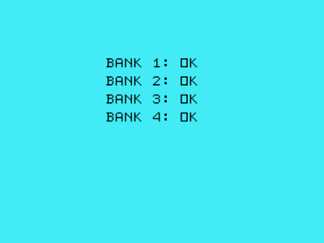

The TI 99/4A Flash ROM Cartridge, or FlashROM 99 for short, is a cartridge for the TI 99/4A home computer that allows for running ROM cartridge images stored on an SD card.
The FlashROM 99 supports ROM-only images of up to 32K that use the
write-to->60xx bank switching scheme. It will not work with programs
using GROMs or CRU-based bank switching. The cartridge does not require the
Peripheral Expansion Box and runs on both PAL and NTSC consoles.
FlashROM 99 is released as Open Source Hardware under the CERN OHL license and the GNU GPL license. Both hardware design files and firmware sources are available on GitHub.
The project homepage is hosted at GitHub.
Using the FlashROM 99 is simple and doesn't require and special hardware or software.
To begin, copy up to 171 cartridge image files onto an SD or SDHC card. Switch off the TI 99 and plug in the FlashROM 99, then insert the SD card into the FlashROM 99. Switch on the TI 99 and wait until the activity indicator on the FlashROM 99 is no longer lit.
Press any key to bring up the TI menu screen. You should see the list of
images found on the SD card. If the SD card contains more than 8 images, a
FLASHROM 99 entry is shown instead. Selecting this entry starts an image
browser where you can page through the list of available images with ,,
., SPACE, and number keys.

Select the image you want to run. The screen will show a loader animation while the image loads. Once the image has been loaded, it will run automatically. The SD card is now no longer required and may be removed.
If only one image is found on the SD card, it is loaded immediately without the need to select it first.
If you want to run a different program from the SD card, reset the TI 99 by
pressing FCTN-= and then reset the FlashROM 99 by pushing the reset
button. If you do not reset the FlashROM 99, the TI menu will show only the
previously selected image. Alternatively, you can power cycle the console,
which will reset both TI 99 and FlashROM 99.
The following sections provide a detailed look at the FlashROM 99 and explain all of its features.
A cartridge image is a binary file containing raw machine code that is
loaded verbatim into the TI 99 cartridge memory. Many programs are
distributed as image files, and typically have a .bin extension.
An additional source for images are cartridge files for emulators. The MESS
emulator, for example, uses .rpk files, which are ordinary ZIP archives
with an unconventional extension. Images files for Classic 99 can be used
as-is.
Finally, many assemblers such as the xas99 cross-assembler can
generate images. Note that files generated for Editor/Assembler Option 5
cannot be used!
Images are single files or multiple files with a common root name:
helloc.bin
hellod.bin
If you also see a file ending in G
hellog.bin
then the image is using GROMs and cannot be used for the FlashROM 99.
The FlashROM 99 uses single-file images of up to 32K that must be
"non-inverted", which is the default until noted otherwise by the creator.
If you have an inverted image, you can use the Python script invert.py in
the lib/ folder: An inverted inverted image is a non-inverted image.
Unfortunately, there's no way to determine if an image is inverted or not --
you'll have to try it. Usually, images ending in 8 are non-inverted, and
images ending in 9 are inverted. If an image crashes the TI 99, invert it
and see if that works instead.
To use multi-file images, you need to concatenate the individual files into a single file:
$ cat hello?.bin > hello.bin # Linux and Mac
c:> copy /b helloc.bin + /b hellod.bin hello.bin # Windows
Note that the FlashROM 99 can also be built with multi-file support, but as this deteriorates the startup time this option is not enabled by default.
Images may have more than one program entry to select. The FlashROM 99 lists all entries of all images.
The FlashROM 99 supports both SD and SDHC cards of class 4 or higher. Slower and unrated cards may also work, just try and see.
Cards must be formatted with the FAT16 or FAT32 filesystem. FAT16 is the default for new SD cards of up to 2 GB, and FAT32 is the default for new SDHC cards of 4 GB and up.
Note that some cards seem to have a difficult personality. For SD cards, it may help to use FAT32 instead of the FAT16 default. If you absolutely cannot get a particular SD/SDHC card to work, just move on and use a different one.
Image files can be dragged and dropped as-is into the root folder of the SD
card. Filenames must end in .bin, but case is ignored. Files with other
extensions may be present and are skipped. For multi-file images, filenames
must have at most 8 characters w/o extension due to filesystem limitations.
The FlashROM 99 handles up to 171 image entries per SD card. Additional images will be ignored.
The FlashROM 99 is always in one of two modes: menu mode or image mode.
When powering up, or after pushing the reset button, the FlashROM 99 is in menu mode. In this mode, the TI 99 menu screen shows the list of available images or the image browser. Selecting an entry will load the selected image from the SD card and run it. Once the image is running, the FlashROM 99 switches to image mode.
In image mode, the FlashROM 99 acts like a ROM cartridge containing the
selected image only. In this mode, the TI 99 menu screen shows the entries
of the selected image. Pressing FCTN-= will warm reset the console
without affecting the currently stored image. The only way to return to
menu mode is to push the FlashROM 99 reset button, to power cycle the
console, or to remove and re-plug the FlashROM 99 cartridge.
Note that the SD card is scanned only once in menu mode. If you swap SD cards you need to push the reset button to re-read the SD card. Once in image mode, the SD card is no longer needed and may be removed until you want to run a different image.
If only one image is found on the SD card, then it is loaded immediately. In this case the FlashROM 99 skips menu mode and enters image mode directly.
The activity indicator LED lights up whenever the FlashROM 99 is busy reading the SD card. During this time, the entire cartridge is "offline" so that the TI 99 cannot detect that a cartridge is plugged in. You may still operate the console, e.g., work with TI BASIC, while the LED is on, but depending on your actions you may crash the TI 99.
To summarize, these simple rules of thumb will make sure that you run the FlashROM 99 without issues:
It is not possible to damage the FlashROM 99 by incorrect operation, assuming that shorting contacts or smashing components is way beyond incorrect operation.
In general, all cartridge dumps with a compatible banking scheme should work fine on the FlashROM 99. Some images converted from other formats, in particular many modern homebrew programs, may also require a 32K RAM expansion.
Some programs, however, don't expect to be started by something other than the TI 99 boot menu, or have difficulties to deal with the remnants of previously run programs left over by a warm reset. In rare cases, this may lead to graphical glitches or other unexpected behavior.
Please refer to the troubleshooting section for a list of games known with issues.
On some early cartridges, programs that access disk drives may not work
correctly on some systems, in particular with the original TI floppy disk
controller. Please check README.md to see if you need to
remove a capacitor from the board.
If you find additional images that don't work as intended on the FlashROM 99, please send a note to the developer at r@0x01.de, maybe the issue can be fixed with a software update for the 8515.
The FlashROM 99 uses a 32K SRAM chip to store a cartridge image of up to that size. The TI 99 addresses the SRAM just like it would address a cartridge ROM chip.
The 377 register maps 8K banks of the 32K SRAM into the cartridge space
>6000 through >7FFF. The bank switching design used here was originally
developed by Jon Guidry (acadiel) for the 16K multi-cart and has since
been used in many homebrew projects.
The ATmega 8515 microcontroller reads the SD card and writes first the menu and browser code and then the selected image into the SRAM chip. The microcontroller code uses a modified version of the Petit FatFs library to make sense of the FAT16/FAT32 filesystems used by SD cards.
Whenever the 8515 is active, the TI 99 must not access the SRAM chip, or the TI 99 will crash, and either one might get damaged. Thus, three 541 line drivers isolate the FlashROM 99 from the cartridge bus whenever the ATmega is writing to the SRAM.
The 377 also buffers the serial one-way communication from the TI 99 to the
FlashROM 99 that relays the image selection. The >6800 address line
transmits the bit data and the >7000 address line transmits the clock.
Currently, 9 bytes of data are transferred, containing the filename of the
selected image.
While the image loads, the TI 99 reads ROM address >6000 continuously.
When the cart if offline, this yields value 0000, but as soon as the cart
goes back online the TI 99 will see the GPL header AAxx and jump to the
loaded image.
If something isn't working as it should, please try the official test program first.
Copy BANKTEST.BIN as single file onto an SD card and
power up your TI 99 with the FlashROM 99. Wait for the LED to turn off, then
press any key to bring up the TI menu.
In the menu, you should see an entry for BANK TEST /x. Select the bank test
to see this screen:

If the bank test doesn't work for you please check the following list for some suggestions.
The TI 99 detects the FlashROM 99, but it cannot access the RAM contents.
Check if the 541s are mounted correctly -- two are upside down. Also look for bad solder joints, in particular for the 541s and the 8515. Finally, verify that you flashed the software to the 8515 correctly.
If the LED starts blinking, the FlashROM 99 could not read some part of the SD card:
Try re-formatting your SD card using FAT32, or try a different card.
The TI 99 starts normally, but the menu shows only TI BASIC.
If the LED doesn't turn on at least briefly when powering up or pushing reset, some contacts on the card or the 8515 may be bad.
If the LED does light up, make sure that your SD card contains at least one
valid image file, ending in .bin or .BIN, that is at most 32K big. You
can use the Python script lib/mklcart.py to generate an .rpk file to
check any image file in MESS.
The menu shows fine, but running some particular program crashes, either right away or after some using the program for some time.
You may run an inverted image, an image requiring a GROM, an image with an incompatible bank switch scheme, or a "fragile" cartridge program.
To fix an inverted image, use the lib/invert.py script. Note that image
files with 8K only cannot be inverted.
A "fragile" program is a program that makes certain assumptions about the state of scratchpad RAM and VDP RAM when it starts. Try loading the program directly to RAM by copying this image file as the only file on an SD card. This will provide the exact environment the program expects.
If this doesn't help, the image may be incompatible. Please send a note to the developer at r@0x01.de for further analysis.
Some functionality of the program doesn't work as expected.
Some games don't expect to be started by another program or to find the remnants of previously run programs. This may lead to graphical glitches or other unexpected behavior.
Try restarting the program by pressing FCTN-= and selecting it from the
menu again to eliminate most issues. Alternatively, put the image as the
only image on the SD card so that it is loaded directly.
If this doesn't help, please send a note to the developer at r@0x01.de for further analysis.
These programs are known to have some flaws when run on the FlashROM 99:
Note that for now, this list refers to particular images tested. There might be different images of those programs that work.
The GitHub repository contains all hardware design files and software sources required to build the FlashROM 99 yourself.
If you want to build a FlashROM 99, you can purchase a professionally made PCB board for €10 and a preprogrammed 8515 for €5 plus shipping and handling. Alternatively, you can get a fully assembled FlashROM 99 cartridge for €45 plus shipping and handling. Please contact the developer at r@0x01.de for further information.
The TI 99/4A Flash ROM Cartridge is Open Source Hardware released under the CERN OHL license, in the hope that TI 99 enthusiasts may find it useful. Software components are released under the GNU GPL license.
The hardware was designed with the open source electronics design automation
suite KiCad. The microcontroller code uses a modified version of the
Petit FatFs library. Thanks go to Jon Guidry (acadiel) of hexbus.com
for designing the original bank switching circuitry for the first TI
multi-carts.
Contributions to both hardware and software are welcome. Please email feedback, support questions, inquiries for parts, and bug reports to the developer at r@0x01.de. Discussions about the FlashROM 99 happen over at AtariAge.